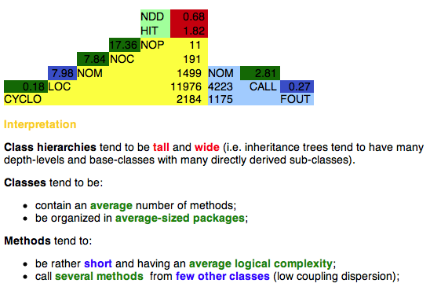

The Overview Pyramid brings together in one place the most significant
measurements about an object-oriented system. It consists of three
parts, each quantifying an important design aspect of object-oriented
systems: size and complexity, usage of inheritance, and coupling.

The left side of the overview pyramid (the yellow area) provides
information characterizing the size and complexity of the system, using
a set of simple but widely used metrics. They count the most
significant units of modularity of an object-oriented system, from the
highest level (i.e. packages or namespaces), down to the lowest level
units (i.e. code lines and independent blocks of functionality). For
each unit, there is one metric in the overview pyramid that measures it:
NOP (total number of packages defined in the system)
NOC (total number of classes defined in the system, not counting
library classes)
NOM (total number of methods defined in the system, including
both methods and global functions)
LOC (total number of lines of code belonging to operations)
CYCLO (sum of the cyclomatic numbers of all the operations
defined in the system)
The numbers shown to the left of these metrics are computed ratios
between the direct metrics placed below and to the right. So, for
example, the fact that NOM / NOC = 7.84 can be directly read from the
number immediately to the right of NOC. These ratios are very important
because, while the direct metrics values contained in the pyramid are
not independent of each other, these ratios are. They can be used to
caracterize different aspects of code organization of the system. For
our example the ratio NOM / NOC represents the average number of
methods in a class, which is a reflexion of the coding style.
The top part of the pyramid (the green area) is dedicated to the usage
of inheritance. It contains only two direct metrics and no ratios,
because the metrics themselves are average numbers, independent of the
size of the system:
NDD (average number of direct descendants of a class, excluding
library classes. If a class has no derived classes, then the class
participates with a value of 0.)
HIT (average of the HIT metric over
all classes defined in the
system. Standalone classes are considered root classes with HIT = 0.)
The right side of the pyramid (the blue area) is dedicated to the
coupling aspect, quatified through two direct metrics:
CALL (total number of distict operation calls in the system.
Multiple calls to the same target operation inside a given operation
are counted only once.)
FOUT (sum of the FANOUT metric
for all the operations defined in
the system)
Again, as in the case of the yellow area of the pyramid, the blue area
also contains computed ratios, which have the desirable characteristic
of being independent of each other. For example, if two systems are
analyzed and one is much larger than the other, the values of all the
direct metrics are likely to be larger for the larger system, because
more code, usually means more operations, more calls, more classes,
more packages, etc. However, the computed ratios are independent of the
size of the system, which makes them ideal when comparing systems of
different sizes.
In fact, the Overview Pyramid already encodes such a comparison in the
coloring of these computed ratios. The comparison is done to a set of
statistically computed thresholds over a very large number of reference
systems. For each computed ratio, three thresholds are computed:
low
- expressing a typical low value for this ratio
average
- expressing a typical average value for this ratio
high -
expressing a typical high value for this ratio
Thus, if a computed ratio is shown in a blue rectangle its value is
closest to the low threshold. Similarly, if a computed ratio is shown
in a green rectangle, its value is closest to the average threshold;
and if a computed ratio is shown in a red rectangle, its value is
closest to the high threshold. The exact same color is used in the
explanatory text, displayed by the tool below the pyramid.